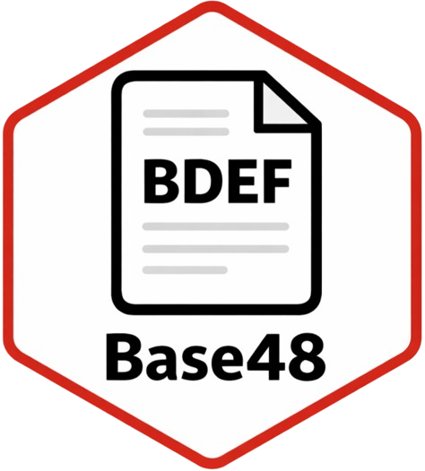

PROJECT
Base48
Canonical Base48 binary-to-text encoding with UTF-8, raw bytes, local file workflows, validation, and reproducible test vectors.

ZZX-LABS R&D // SOFTWARE // WEB MIRROR
Deterministic binary-to-text codec derived from Bitcoin Base58 with the NoCSPAM character removals, supporting UTF-8, hexadecimal bytes, files, canonical validation, and reproducible test vectors.
DETERMINISTIC BINARY-TO-TEXT ENCODING
UTF-8 ↔ BASE48
Encode arbitrary UTF-8 text into the canonical 48-character alphabet or decode Base48 back into UTF-8.
RAW BYTES ↔ BASE48
Encode hexadecimal byte strings and recover the exact bytes after decoding.
LOCAL FILE ↔ BASE48
Encode a local file to Base48 text or decode pasted Base48 into a downloadable binary file.
CANONICAL VALIDATION
Validate alphabet membership, identify invalid characters, count leading zero symbols, and inspect decoded length.
REPRODUCIBLE VECTORS
Generate deterministic UTF-8/hex/Base48 vectors using the exact browser codec implementation.
| Input | Hex | Base48 | Round-trip |
|---|
CANONICAL ALPHABET
Base48 starts from Bitcoin's Base58 alphabet and removes C/c, S/s, P/p, A/a, and M/m.
1, matching the familiar Base58-style leading-zero convention.PROJECT
Canonical Base48 binary-to-text encoding with UTF-8, raw bytes, local file workflows, validation, and reproducible test vectors.
ALPHABET
123456789BDEFGHJKLNQRTUVWXYZbdefghijknoqrtuvwxyz